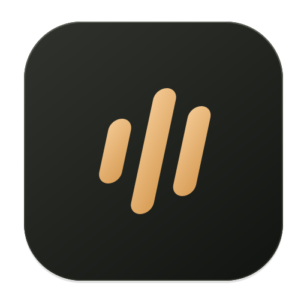
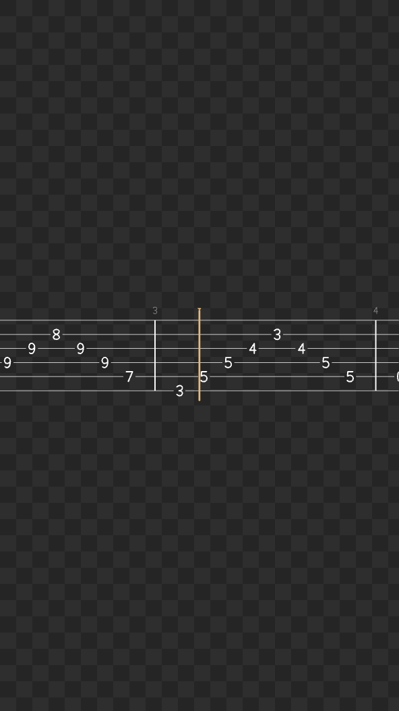
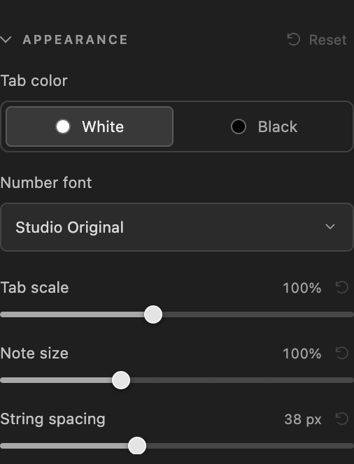
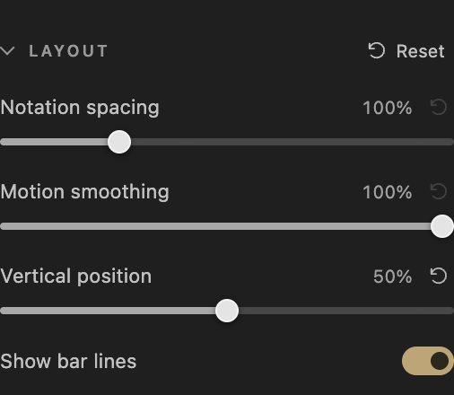
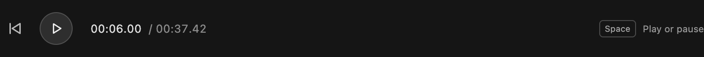
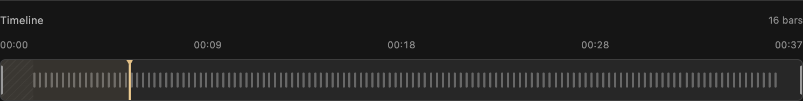

Guitar Pro dosyalarını kayan tab videolarına dönüştür.
.gp dosyanı içe aktar, görünümünü özelleştir ve notalarla senkronize ilerleyen bir tab videosu oluştur.






Özellikler
- Dosya
- Guitar Pro (.gp)
- Çıktı
- Şeffaf arka planlı ProRes 4444
Şeffaf arka planlı PNG dizisi
Renkli arka planlı MP4 - Çözünürlük
- 4K'ya kadar, yatay ya da dikey
- Kare hızı
- 24, 25, 30, 50, 60 fps
- Zamanlama
- Doğrudan dosyadan gelir. Ses, kayıt ya da senkron gerekmez.
- Görünüm
- Rakam fontu, tab rengi, tab boyutu, nota boyutu, oynatma çizgisi, hareket yumuşatma, arka plan, hazır ayarlar
- Önizleme
- Ekranda ne görüyorsan video da öyle çıkar.
- Fiyat
- İlk 3 video ücretsiz, tam kalitede ve tüm özellikler açık. Sonrası tek seferlik ödeme, abonelik yok.
- Gereksinim
- Apple Silicon işlemcili bir Mac